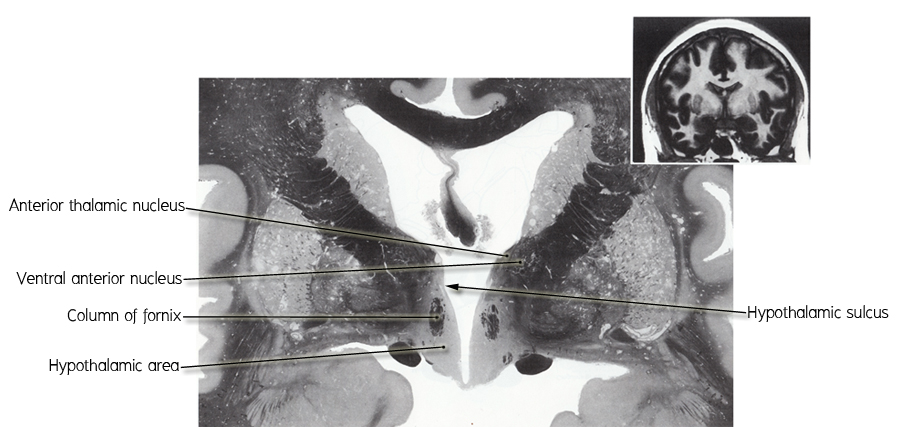

* Cerebral hemisphere ตัดผ่าน
- Corpus callosum, fornix, caudate nucleus, internal capsule และ lentiform nucleus.
- Fornix โดย ถูกตัดผ่าน 2 แห่ง (1) body of fornix ห้อยแขวนอยู่กับ corpus callosum ด้วย
septum pellucidum (2) column of fornix ทอดอยู่ใน hypothalamus
- Internal capsule แทรกอยู่ในระหว่าง caudate nucleus, thalamus และ lentiform nucleus
* Diencephalon ถูกล้อมรอบโดย cerebral hemisphere และตัดผ่าน
- Thalamus เห็น anterior thalamic nucleus ซึ่งถูกโอบล้อมโดย internal medullary laminar,
medial dorsal (MD) nucleus และ ventral anterior (VA) nucleus
- Hypothalamus แยกจาก thalamus ด้วย hypothalamic sulcus และร่วมกันเป็นผนังของ third
ventricle
